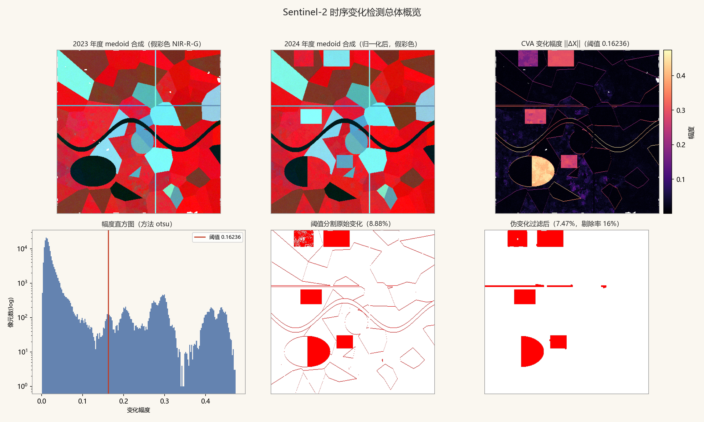
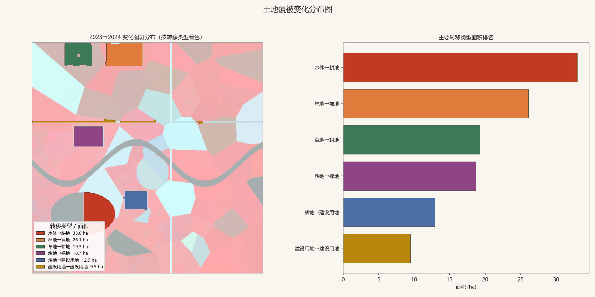
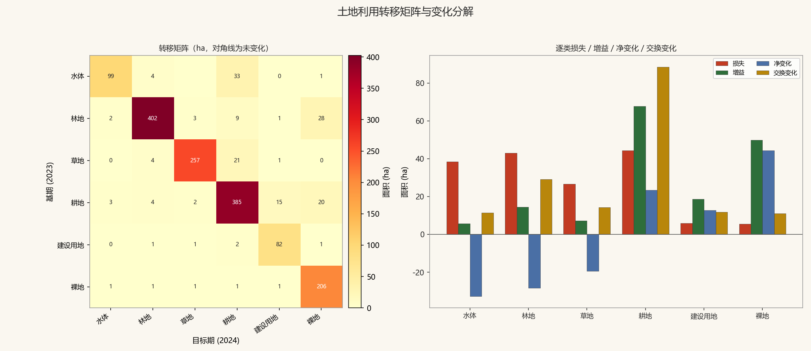
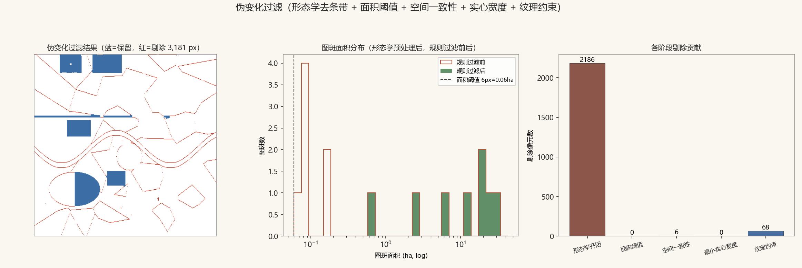
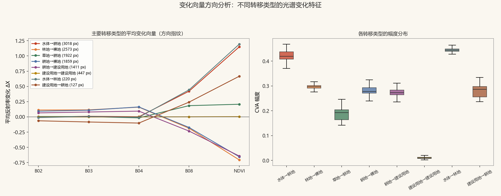

遥感作品集 · REMOTE SENSING PORTFOLIO
Sentinel-2 时序土地覆被变化检测流水线
CVA 变化向量分析自研实现 · 去云 → 年度合成 → 检测 → 伪变化过滤 → 图斑/转移矩阵 → 报表图件
Python 3.13
rasterio
xarray
scikit-learn
核心算法全自研 · 零变化检测库
带真值评估 · seed 可复现
33 项自动化测试全绿
一、流水线一览
基于 Sentinel-2 双年度时序（每 10 天一景 × 4 波段 @10m）的土地覆被变化检测完整闭环。
未调用任何现成变化检测封装库——CVA、Otsu 阈值、连通域标记（Union-Find）、二值形态学、
Sobel/局部标准差纹理、medoid 合成、转移矩阵分解均为手写实现，可逐行讲解。
去云SCL 掩膜 + 2px 膨胀
规则云分数兜底
→
年度合成生长季窗口
medoid 最优像元
→
辐射归一化PIF 迭代回归
R²≈0.99
→
CVA 检测 ★‖ΔX‖ 模长 + 方向
纯 numpy 自研
→
阈值分割自研 Otsu
三策略可切换
→
伪变化过滤形态学 + 四规则
图斑 15 → 8
→
图斑 / 矩阵GeoJSON 矢量
净/交换变化分解
关键工程结论：全年 medoid 合成会让水稻在物候态之间跳变，耕→耕伪变化幅度
与真实变化同量级（阈值无解）；切换生长季窗口后未变化像元 P99 从 0.19 降到 0.10，
同一套算法精确率从 24% 升到 90%+ ——伪变化治理的大头在合成环节，而不是过滤环节。
二、示例结果图

图 1 · 总体概览。左上/中上：2023 与 2024 年度 medoid 合成（假彩色 NIR-R-G，
可见北部采伐迹地、水库东侧围垦、新建厂房）；右上：CVA 变化幅度 ‖ΔX‖；左下：幅度直方图与 Otsu 阈值（0.162）；
中下/右下：阈值分割原始变化（8.88%，含配准残差条带）与伪变化过滤后（7.47%）对比。

图 2 · 变化分布图（按转移类型着色）。水体→耕地 33.0 ha（水库围垦）、林地→裸地 26.1 ha（采伐）、
草地→耕地 19.3 ha（开垦）、耕地→裸地 18.7 ha（撂荒）、耕地→建设用地 12.9 ha（厂房）；
建设用地→建设用地 9.5 ha 为刻意保留的配准残差残留，用于展示过滤体系的真实上限。

图 3 · 土地利用转移矩阵与变化分解。左：全域转移矩阵热力图（ha，对角线为未变化）；
右：逐类损失/增益/净变化/交换变化。耕地净变化仅 +23.4 ha 而交换变化高达 88.5 ha——
只看净变化会严重低估真实扰动强度（Pontius 交换变化分解）。

图 4 · 伪变化过滤三联图。左：原始 vs 过滤后（红=剔除 3,181 px，蓝=保留）；
中：图斑面积分布（过滤前红阶梯线 vs 过滤后绿色填充，面积阈值 0.06 ha）；
右：各阶段剔除贡献——形态学开闭剥除条带 2,186 px，四条规则剔除 7 图斑/74 px。

图 5 · 变化向量方向分析。左：各转移类型的平均变化向量 ΔX（方向指纹）——
水体→耕地呈 NIR/NDVI 大幅上升，耕地→建设用地呈 NIR 下降 + 可见光上升，物理意义清晰可解释；
右：各类型 CVA 幅度箱线图。
三、方法要点
3.1 medoid 年度合成（而不是均值/中位数）
把一年内有效观测视为光谱空间点集，取距逐波段中位数欧氏距离最近的真实观测：
mb = mediant Xt,b，t* = argmint Σb(Xt,b − mb)²。
medoid 输出的像元光谱自洽（NDVI 与红光关系不被破坏）、对云残留离群稳健、隐式落在生长旺季。
生长季窗口（DOY 150–260）进一步保证两年 medoid 落在同一物候平台上，年际可比。
3.2 CVA 变化向量分析（自研核心）
逐像元构造变化向量 ΔX = X₂ − X₁ ∈ RC：
模长 ‖ΔX‖ = √(Σc wc·Δbc²) 度量"变没变、多剧烈"，
方向 ΔX/‖ΔX‖ 回答"怎么变"。CVA 不预设变化类型——任何方向的光谱变化都体现在模长上，
检测（阈值）与定性（方向 + 分类 from→to）解耦，互为校核。
3.3 伪变化过滤的分层设计
- 形态学开运算：剥除配准残差的 1~2px 边缘条带（本场景占伪变化像元 97%）；
- R1 面积 ≥6px（600 m²）治椒盐噪声；R2 空间一致性（邻域同类占比 ≥0.55）治孤立碎斑；
- R3 最小实心宽度：图斑须含 3×3 实心核——不受面积豁免，1px×300px 的条带再长也不可能是可信地类转换；
- R4 纹理：图斑内 NIR 局部 σ ≤0.06，治高纹理边缘噪声；大图斑豁免。
3.4 转移矩阵与交换变化
随机森林（4 波段 + NDVI + 亮度，OOB 0.988/0.985）输出两期类别图 → 转移矩阵按
Pontius 口径分解：净变化 Net = |终−初|，交换变化 Swap = 2·min(损失, 增益)——
A 处耕地变林地、B 处林地变耕地时净变化近零而扰动是双份，只看面积对比会严重低估。
四、精度评估（对照模拟真值）
| 评估项 | 结果 |
|---|
| 像元级召回率 / 精确率 / F1 | 98.7% / 90.3% / 94.3% |
| 林地→裸地（采伐，25.6 ha） | 召回 99.0% |
| 耕地→建设用地（厂房，12.8 ha） | 召回 96.9% |
| 水体→耕地（围垦，33.0 ha） | 召回 100% |
| 草地→耕地（开垦，19.2 ha） | 召回 99.1% |
| 耕地→裸地（撂荒，18.7 ha） | 召回 97.2% |
| 随机森林 OOB（2023 / 2024） | 0.988 / 0.985 |
| 变化区 from/to 与真值一致率 | 99% / 95% |
演示数据为物理可解释的合成 Sentinel-2 时序（seed=20260829 逐位可复现）：
含植被物候轨迹、稻田泡田期、逐时相大气差异、云/云影/卷云、物候年际抖动、土壤湿度漂移、1px 配准残差，
以及 5 处已知真值变化事件。真实数据接入方式见仓库 README 第 7 节。
五、优点与局限
- 优点：核心算法全自研可逐行讲解；清单驱动的数据接入（真实数据只需生成 manifest）；
NaN 语义贯穿防 nodata 伪装；真值可评估、参数可归因；33 项测试含端到端召回门槛。
- 局限：配准残差未在流水线内处理（生产应先精配准）；双时相 CVA 回答不了"何时变"；
4 波段无 SWIR 时建设用地/云影区分能力有限——这些在 README §5 都有交代与改进方向。